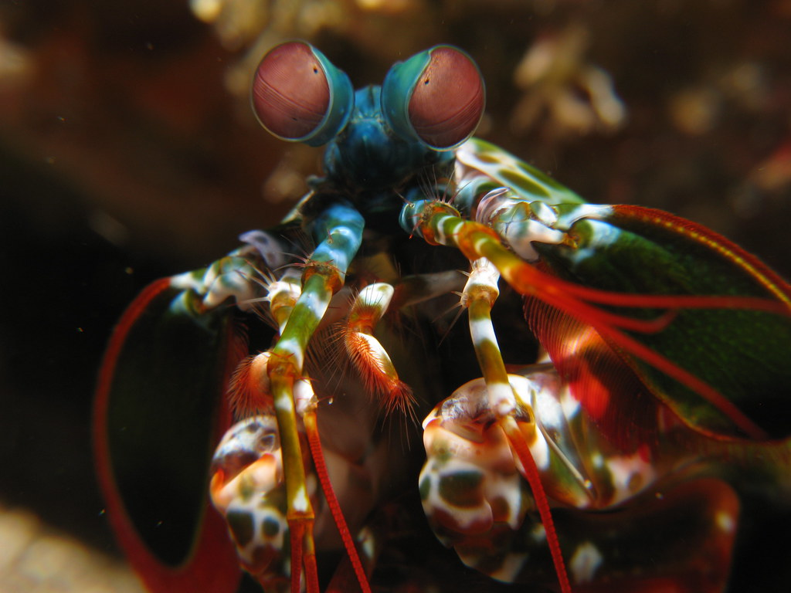

Spider Monkey

Spider monkeys are named after their spider-like appearance as they hang upside down by their tails.
- Scientific Name: Ateles
- Average Height: 2 feet
- Average Lifespan: 25 years
- Habitat: Tropical rainforests
Found in tropical forests of Central and South America, from the south of Mexico to Brazil. Spider monkeys have long dexterous tails that they use as a fifth limb to hold on to tree branches. The genus is made up of seven species.
Mantis Shrimp
The mantis shrimp is well known form their striking force/speed that can boil water.
- Scientific Name: Stomatopod
- Average Size: 4-8 in.
- Average Lifespan: 3-6 years
- Habitat: Indian & Pacific Oceans
A small, aggressive marine Crustacean found in tropical and subtropical oceans. They sport vibrant colors and can club prey with the force of a bullet.